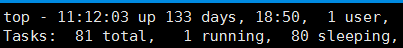
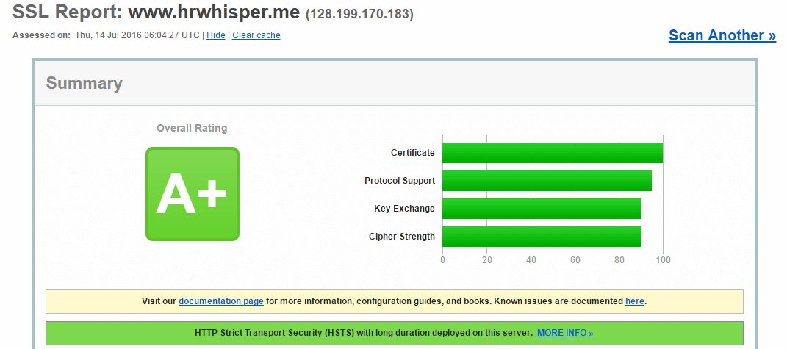

<!DOCTYPE html>


<html lang="en">


<head>
  <meta charset="utf-8" />
   
  <meta name="keywords" content="c,c++,java,python,leetcode,algorithm,reading,life,moods,machine-learning,data-mining,deep-learning,AI" />
   
  <meta name="description" content="一个分享机器学习、算法与数据结构，个人学习心得、读书笔记、生活的博客。" />
  
  <meta name="viewport" content="width=device-width, initial-scale=1, maximum-scale=1" />
  <title>
    LNMP站点配置指南 |  一个分享机器学习、算法与数据结构，个人学习心得、读书笔记、生活的博客。
  </title>
  <meta name="generator" content="hexo-theme-ayer">
  
  <link rel="shortcut icon" href="/favicon.ico" />
  
  
<link rel="stylesheet" href="/dist/main.css">

  
<link rel="stylesheet" href="https://cdn.jsdelivr.net/gh/Shen-Yu/cdn/css/remixicon.min.css">

  
<link rel="stylesheet" href="/css/custom.css">

  
  
<script src="https://cdn.jsdelivr.net/npm/pace-js@1.0.2/pace.min.js"></script>

  
  

  

</head>

</html>

<body>
  <div id="app">
    
      
    <main class="content on">
      <section class="outer">
  <article
  id="post-wordpress-lnmp-site-building"
  class="article article-type-post"
  itemscope
  itemprop="blogPost"
  data-scroll-reveal
>
  <div class="article-inner">
    
    <header class="article-header">
       
<h1 class="article-title sea-center" style="border-left:0" itemprop="name">
  LNMP站点配置指南
</h1>
 

    </header>
     
    <div class="article-meta">
      <a href="/wordpress-lnmp-site-building/" class="article-date">
  <time datetime="2016-07-17T03:23:45.000Z" itemprop="datePublished">2016-07-17</time>
</a> 
      
  <div class="article-category">
    <a class="article-category-link" href="/categories/others/">others</a> / <a class="article-category-link" href="/categories/others/%E5%BB%BA%E7%AB%99%E7%BB%8F%E9%AA%8C/">建站经验</a>
  </div>
 
       
        
<div class="word_count">
    <span class="post-time">
        <span class="post-meta-item-icon">
            <i class="ri-quill-pen-line"></i>
            <span class="post-meta-item-text"> Word count:</span>
            <span class="post-count">2.3k</span>
        </span>
    </span>

    <span class="post-time">
        &nbsp; | &nbsp;
        <span class="post-meta-item-icon">
            <i class="ri-book-open-line"></i>
            <span class="post-meta-item-text"> Reading time≈</span>
            <span class="post-count">11 min</span>
        </span>
    </span>
</div>

      
       
        <div class="word_count">
    <span class="post-meta-item-icon">
        <i class="ri-eye-fill"></i> 
        阅读数:<span id="/wordpress-lnmp-site-building/" data-flag-title="LNMP站点配置指南" class="leancloud_visitors">0</span>次
    </span>
</div>
      
    </div>
      
    <div class="tocbot"></div>


  
    <div class="article-entry" itemprop="articleBody">
       
  <p>最近把服务器的架构从LAMP换成了LNMP（linux + nginx + mysql + php），顺便换了个服务器。下面把过程记录一下。</p>
<blockquote>
<p>2017/7/17 更新 : centos 6.9 + nginx 1.12.1 + mysql 5.7 + php 7.1<br><a id="more"></a><br>上一次的<a target="_blank" rel="noopener" href="https://www.hrwhisper.me/optimizing-apache-for-low-memory-ram-vps/">apache 在低配置服务器下的优化</a> 执行完，博客已经在LAMP稳定的运行了133天。</p>
</blockquote>
<p></p>
<p>可以看出，优化还是比较成功的，那么这次为什么要改成LNMP呢?</p>
<p>原因是我感觉有时候浏览blog的时候速度很慢，但过一会儿又很快，感觉是apache阻塞式运行方式造成了并发不行。。。</p>
<p>现在换了LNMP后，没有感觉这些问题。</p>
<p>服务器系统为centos 6.</p>
<h1 id="环境部分"><a href="#环境部分" class="headerlink" title="环境部分"></a>环境部分</h1><h2 id="Nginx"><a href="#Nginx" class="headerlink" title="Nginx"></a>Nginx</h2><p>首先编辑源</p>
<ul>
<li>vim /etc/yum.repos.d/nginx.repo</li>
</ul>
<p>输入如下内容</p>
<figure class="highlight plain"><table><tr><td class="gutter"><pre><span class="line">1</span><br><span class="line">2</span><br><span class="line">3</span><br><span class="line">4</span><br><span class="line">5</span><br></pre></td><td class="code"><pre><span class="line">[nginx] </span><br><span class="line">name&#x3D;nginx repo  </span><br><span class="line">baseurl&#x3D;http:&#x2F;&#x2F;nginx.org&#x2F;packages&#x2F;centos&#x2F;$releasever&#x2F;$basearch&#x2F;  </span><br><span class="line">gpgcheck&#x3D;0  </span><br><span class="line">enabled&#x3D;1</span><br></pre></td></tr></table></figure>
<p>然后使用yum安装步骤如下</p>
<ul>
<li>sudo yum install nginx</li>
<li>sudo /etc/init.d/nginx start</li>
</ul>
<p>这时候可以通过IP地址访问你的站点看看是否是nginx呢?</p>
<p>忘记IP了？（如下命令打印出IP）</p>
<figure class="highlight plain"><table><tr><td class="gutter"><pre><span class="line">1</span><br></pre></td><td class="code"><pre><span class="line">ifconfig eth0  grep inet  awk &#39;&#123; print $2 &#125;&#39;</span><br></pre></td></tr></table></figure>
<p>接下来进行配置，打开   sudo vi /etc/nginx/nginx.conf</p>
<ul>
<li>将worker_processes 设置为4;</li>
</ul>
<h2 id="PHP安装和配置"><a href="#PHP安装和配置" class="headerlink" title="PHP安装和配置"></a>PHP安装和配置</h2><h3 id="新版安装"><a href="#新版安装" class="headerlink" title="新版安装"></a>新版安装</h3><p>yum默认的版本太老了，装5.6配置一下源：</p>
<figure class="highlight plain"><table><tr><td class="gutter"><pre><span class="line">1</span><br><span class="line">2</span><br><span class="line">3</span><br><span class="line">4</span><br><span class="line">5</span><br><span class="line">6</span><br><span class="line">7</span><br></pre></td><td class="code"><pre><span class="line">CentOS&#x2F;RHEL 7.x:</span><br><span class="line">rpm -Uvh https:&#x2F;&#x2F;dl.fedoraproject.org&#x2F;pub&#x2F;epel&#x2F;epel-release-latest-7.noarch.rpm</span><br><span class="line">rpm -Uvh https:&#x2F;&#x2F;mirror.webtatic.com&#x2F;yum&#x2F;el7&#x2F;webtatic-release.rpm</span><br><span class="line"></span><br><span class="line">CentOS&#x2F;RHEL 6.x:</span><br><span class="line">rpm -Uvh https:&#x2F;&#x2F;dl.fedoraproject.org&#x2F;pub&#x2F;epel&#x2F;epel-release-latest-6.noarch.rpm</span><br><span class="line">rpm -Uvh https:&#x2F;&#x2F;mirror.webtatic.com&#x2F;yum&#x2F;el6&#x2F;latest.rpm</span><br></pre></td></tr></table></figure>
<p>然后安装php7</p>
<ul>
<li><code>yum install php71w php71w-fpm php71w-mysql</code></li>
</ul>
<p>如果要安装php5.6</p>
<ul>
<li><code>yum install php56w php56w-fpm php56w-mysql</code></li>
</ul>
<h3 id="旧版安装"><a href="#旧版安装" class="headerlink" title="旧版安装"></a>旧版安装</h3><p>系统默认的比较老，可以直接：</p>
<ul>
<li><code>sudo yum install php-fpm php-mysql</code></li>
</ul>
<h3 id="配置"><a href="#配置" class="headerlink" title="配置"></a>配置</h3><ul>
<li><p>接着编辑php.ini文件，将cgi.fix_pathinfo设置为0</p>
<ul>
<li><code>sudo vi /etc/php.ini</code></li>
<li><code>cgi.fix_pathinfo=0</code></li>
</ul>
</li>
<li><p><code>sudo vi /etc/php-fpm.d/www.conf</code></p>
<ul>
<li>设置用户和组别为nginx</li>
</ul>
</li>
</ul>
<blockquote>
<p>[…]<br>; Unix user/group of processes<br>; Note: The user is mandatory. If the group is not set, the default user’s group<br>;        will be used.<br>; RPM: apache Choosed to be able to access some dir as httpd<br>user = nginx<br>; RPM: Keep a group allowed to write in log dir.<br>group = nginx<br>[…]</p>
</blockquote>
<ul>
<li><p>重启php-fpm</p>
<ul>
<li><code>sudo service php-fpm restart</code></li>
</ul>
</li>
</ul>
<h3 id="PHP-FPM优化"><a href="#PHP-FPM优化" class="headerlink" title="PHP-FPM优化"></a>PHP-FPM优化</h3><p>由于是小的内存，只有512MB，除开启虚拟内存外，我对php-fpm也进行了优化。</p>
<p><code>sudo  vi /etc/php-fpm.d/www.conf</code></p>
<figure class="highlight plain"><table><tr><td class="gutter"><pre><span class="line">1</span><br><span class="line">2</span><br><span class="line">3</span><br><span class="line">4</span><br></pre></td><td class="code"><pre><span class="line">pm.max_children &#x3D; 20</span><br><span class="line">pm.start_servers &#x3D; 5</span><br><span class="line">pm.min_spare_servers &#x3D; 1</span><br><span class="line">pm.max_spare_servers &#x3D; 5</span><br></pre></td></tr></table></figure>
<h2 id="Mysql"><a href="#Mysql" class="headerlink" title="Mysql"></a>Mysql</h2><h3 id="Mysql5-7新版安装"><a href="#Mysql5-7新版安装" class="headerlink" title="Mysql5.7新版安装"></a>Mysql5.7新版安装</h3><p>要安装新版本可以先去<a target="_blank" rel="noopener" href="https://dev.mysql.com/downloads/repo/yum/">https://dev.mysql.com/downloads/repo/yum/</a> 找到系统对应源的地址</p>
<p>比如我的：</p>
<figure class="highlight plain"><table><tr><td class="gutter"><pre><span class="line">1</span><br></pre></td><td class="code"><pre><span class="line">wget https:&#x2F;&#x2F;dev.mysql.com&#x2F;get&#x2F;mysql57-community-release-el6-11.noarch.rpm</span><br></pre></td></tr></table></figure>
<p>然后安装</p>
<figure class="highlight plain"><table><tr><td class="gutter"><pre><span class="line">1</span><br><span class="line">2</span><br><span class="line">3</span><br></pre></td><td class="code"><pre><span class="line">sudo yum localinstall mysql57-community-release-el6-11.noarch.rpm</span><br><span class="line">sudo yum -y install mysql-community-server</span><br><span class="line">sudo service mysqld start</span><br></pre></td></tr></table></figure>
<p>Mysql5.7默认 root 安装了 validate_password 插件，这个插件要求必须使用强密码，生成的 root 密码在 /var/log/mysqld.log，查看：</p>
<ul>
<li><code>cat /var/log/mysqld.log grep password</code></li>
</ul>
<p>然后</p>
<ul>
<li><code>sudo /usr/bin/mysql_secure_installation</code></li>
</ul>
<p>输入密码后，修改密码（要求强密码，最好字母大小写、数字、特殊字符），然后一路按y</p>
<h3 id="旧版安装-1"><a href="#旧版安装-1" class="headerlink" title="旧版安装"></a>旧版安装</h3><p>系统yum里面的为5.1版本，安装直接如下：</p>
<ul>
<li><code>sudo yum -y install mysql-server</code></li>
<li><code>sudo /etc/init.d/mysqld restart</code></li>
</ul>
<p>打开设置向导，设置好密码后，一路yes</p>
<ul>
<li><code>sudo /usr/bin/mysql_secure_installation</code></li>
</ul>
<h3 id="配置-1"><a href="#配置-1" class="headerlink" title="配置"></a>配置</h3><p>登入mysql</p>
<ul>
<li><code>mysql -u root -p</code></li>
</ul>
<p>创建数据库</p>
<ul>
<li><code>create database wordpress;</code></li>
</ul>
<p>创建用户把hrwhisper改成你的用户即可</p>
<ul>
<li><code>create user hrwhisper@localhost;</code></li>
</ul>
<p>设置密码</p>
<ul>
<li><code>set password for hrwhisper@localhost=password(&quot;123456&quot;);</code></li>
</ul>
<p>设置权限</p>
<ul>
<li><code>grant select,insert,update,delete,create,index,references,alter on   wordpress.* to hrwhisper@localhost identified by &#39;123456&#39;;</code></li>
</ul>
<p>做完上面的步骤后</p>
<ul>
<li><code>FLUSH PRIVILEGES;</code></li>
<li><code>exit;</code></li>
</ul>
<h3 id="恢复数据库"><a href="#恢复数据库" class="headerlink" title="恢复数据库"></a>恢复数据库</h3><p>如果是旧的站点，可以将数据库导入,方法如下：</p>
<p>登录数据库后，进行如下操作</p>
<p>（1）选择数据库  mysql&gt;use abc;</p>
<p>（2）设置数据库编码  mysql&gt;set names utf8;</p>
<p>（3）导入数据（注意sql文件的路径）   mysql&gt;source /home/abc/abc.sql;</p>
<h2 id="获取wordpress"><a href="#获取wordpress" class="headerlink" title="获取wordpress"></a>获取wordpress</h2><p>和LAMP一样，</p>
<ul>
<li>wget <a target="_blank" rel="noopener" href="http://wordpress.org/latest.tar.gz">http://wordpress.org/latest.tar.gz</a></li>
<li><p>tar -xzvf latest.tar.gz</p>
</li>
<li><p>cp ~/wordpress/wp-config-sample.php ~/wordpress/wp-config.php</p>
</li>
<li><p>sudo vi ~/wordpress/wp-config.php</p>
<ul>
<li>修改如下内容</li>
</ul>
</li>
</ul>
<blockquote>
<p>// <strong> MySQL settings - You can get this info from your web host </strong> //<br>/<em>* The name of the database for WordPress </em>/<br>define(‘DB_NAME’, ‘wordpress’);</p>
<p>/<em>* MySQL database username </em>/<br>define(‘DB_USER’, ‘wordpressuser’);</p>
<p>/<em>* MySQL database password </em>/<br>define(‘DB_PASSWORD’, ‘password’);</p>
</blockquote>
<ul>
<li><code>sudo mkdir -p /var/www/html</code></li>
<li><code>sudo cp -r ~/wordpress/* /var/www/html</code></li>
<li><p><code>cd /var/www/</code></p>
</li>
<li><p>修改用户和用户组</p>
<ul>
<li><code>sudo chown nginx:nginx * -R</code></li>
<li><code>sudo usermod -a -G nginx username</code></li>
</ul>
</li>
</ul>
<h2 id="配置nginx路径"><a href="#配置nginx路径" class="headerlink" title="配置nginx路径"></a>配置nginx路径</h2><p><code>sudo vim /etc/nginx/conf.d/default.conf</code></p>
<p>这里列举修改的地方</p>
<ul>
<li>在index那行中添加index.php</li>
<li>改变根目录为 /var/www/html;</li>
<li>把 “location ~ .php$ {“, 的注释全部去掉</li>
<li>改变location ~下的root路径为/var/www/html;</li>
<li>修改fastcgi_param</li>
</ul>
<p>可以参考如下：</p>
<figure class="highlight plain"><table><tr><td class="gutter"><pre><span class="line">1</span><br><span class="line">2</span><br><span class="line">3</span><br><span class="line">4</span><br><span class="line">5</span><br><span class="line">6</span><br><span class="line">7</span><br><span class="line">8</span><br><span class="line">9</span><br><span class="line">10</span><br><span class="line">11</span><br><span class="line">12</span><br><span class="line">13</span><br><span class="line">14</span><br><span class="line">15</span><br><span class="line">16</span><br><span class="line">17</span><br><span class="line">18</span><br><span class="line">19</span><br><span class="line">20</span><br><span class="line">21</span><br><span class="line">22</span><br><span class="line">23</span><br><span class="line">24</span><br><span class="line">25</span><br><span class="line">26</span><br><span class="line">27</span><br><span class="line">28</span><br><span class="line">29</span><br><span class="line">30</span><br><span class="line">31</span><br><span class="line">32</span><br><span class="line">33</span><br><span class="line">34</span><br><span class="line">35</span><br><span class="line">36</span><br><span class="line">37</span><br><span class="line">38</span><br><span class="line">39</span><br><span class="line">40</span><br><span class="line">41</span><br><span class="line">42</span><br><span class="line">43</span><br><span class="line">44</span><br><span class="line">45</span><br><span class="line">46</span><br><span class="line">47</span><br><span class="line">48</span><br><span class="line">49</span><br><span class="line">50</span><br><span class="line">51</span><br><span class="line">52</span><br><span class="line">53</span><br></pre></td><td class="code"><pre><span class="line">#</span><br><span class="line"># The default server</span><br><span class="line">#</span><br><span class="line">server &#123;</span><br><span class="line">    listen       80;</span><br><span class="line">    server_name  _;</span><br><span class="line"></span><br><span class="line">#charset koi8-r;</span><br><span class="line"></span><br><span class="line">#access_log  logs&#x2F;host.access.log  main;</span><br><span class="line"></span><br><span class="line">location &#x2F; &#123;</span><br><span class="line">        root   &#x2F;var&#x2F;www&#x2F;html;</span><br><span class="line">        index index.php  index.html index.htm;</span><br><span class="line">    &#125;</span><br><span class="line"></span><br><span class="line">error_page  404              &#x2F;404.html;</span><br><span class="line">    location &#x3D; &#x2F;404.html &#123;</span><br><span class="line">        root   &#x2F;usr&#x2F;share&#x2F;nginx&#x2F;html;</span><br><span class="line">    &#125;</span><br><span class="line"></span><br><span class="line"># redirect server error pages to the static page &#x2F;50x.html</span><br><span class="line">    #</span><br><span class="line">    error_page   500 502 503 504  &#x2F;50x.html;</span><br><span class="line">    location &#x3D; &#x2F;50x.html &#123;</span><br><span class="line">        root   &#x2F;usr&#x2F;share&#x2F;nginx&#x2F;html;</span><br><span class="line">    &#125;</span><br><span class="line"></span><br><span class="line"># proxy the PHP scripts to Apache listening on 127.0.0.1:80</span><br><span class="line">    #</span><br><span class="line">    #location ~ \.php$ &#123;</span><br><span class="line">    #    proxy_pass   http:&#x2F;&#x2F;127.0.0.1;</span><br><span class="line">    #&#125;</span><br><span class="line"></span><br><span class="line"># pass the PHP scripts to FastCGI server listening on 127.0.0.1:9000</span><br><span class="line">    #</span><br><span class="line">    location ~ \.php$ &#123;</span><br><span class="line">        root           &#x2F;var&#x2F;www&#x2F;html;</span><br><span class="line">        fastcgi_pass   127.0.0.1:9000;</span><br><span class="line">        fastcgi_index  index.php;</span><br><span class="line">        fastcgi_param  SCRIPT_FILENAME  $document_root$fastcgi_script_name;</span><br><span class="line">        include        fastcgi_params;</span><br><span class="line">    &#125;</span><br><span class="line"></span><br><span class="line"># deny access to .htaccess files, if Apache&#39;s document root</span><br><span class="line">    # concurs with nginx&#39;s one</span><br><span class="line">    #</span><br><span class="line">    #location ~ &#x2F;\.ht &#123;</span><br><span class="line">    #    deny  all;</span><br><span class="line">    #&#125;</span><br><span class="line">&#125;</span><br><span class="line"></span><br><span class="line"></span><br></pre></td></tr></table></figure>
<h2 id="设置自启动"><a href="#设置自启动" class="headerlink" title="设置自启动"></a>设置自启动</h2><p>配置完上面的记得重启一下</p>
<figure class="highlight shell"><table><tr><td class="gutter"><pre><span class="line">1</span><br><span class="line">2</span><br><span class="line">3</span><br></pre></td><td class="code"><pre><span class="line">sudo chkconfig --levels 235 mysqld on</span><br><span class="line">sudo chkconfig --levels 235 nginx on</span><br><span class="line">sudo chkconfig --levels 235 php-fpm on</span><br></pre></td></tr></table></figure>
<p>到这里，基本配置已经结束，站点已经能正常访问。 下面是进阶的配置，如开启gzip、rewrite、https等</p>
<h1 id="其他的配置"><a href="#其他的配置" class="headerlink" title="其他的配置"></a>其他的配置</h1><h2 id="开启gzip"><a href="#开启gzip" class="headerlink" title="开启gzip"></a>开启gzip</h2><ul>
<li>vim  /etc/nginx/nginx.conf</li>
</ul>
<figure class="highlight plain"><table><tr><td class="gutter"><pre><span class="line">1</span><br><span class="line">2</span><br><span class="line">3</span><br><span class="line">4</span><br><span class="line">5</span><br><span class="line">6</span><br><span class="line">7</span><br><span class="line">8</span><br><span class="line">9</span><br><span class="line">10</span><br><span class="line">11</span><br><span class="line">12</span><br><span class="line">13</span><br><span class="line">14</span><br><span class="line">15</span><br><span class="line">16</span><br></pre></td><td class="code"><pre><span class="line">gzip on;</span><br><span class="line"></span><br><span class="line"># 启用gzip压缩的最小文件，小于设置值的文件将不会压缩</span><br><span class="line">gzip_min_length 1k;</span><br><span class="line"></span><br><span class="line"># gzip 压缩级别，1-10，数字越大压缩的越好，也越占用CPU时间，后面会有详细说明</span><br><span class="line">gzip_comp_level 2;</span><br><span class="line"></span><br><span class="line"># 进行压缩的文件类型。javascript有多种形式。其中的值可以在 mime.types 文件中找到。</span><br><span class="line">gzip_types text&#x2F;plain application&#x2F;javascript application&#x2F;x-javascript text&#x2F;css application&#x2F;xml text&#x2F;javascript application&#x2F;x-httpd-php image&#x2F;jpeg image&#x2F;gif image&#x2F;png;</span><br><span class="line"></span><br><span class="line"># 是否在http header中添加Vary: Accept-Encoding，建议开启</span><br><span class="line">gzip_vary on;</span><br><span class="line"></span><br><span class="line"># 禁用IE 6 gzip</span><br><span class="line">gzip_disable &quot;MSIE [1-6]\.&quot;;</span><br></pre></td></tr></table></figure>
<h2 id="开启rewrite"><a href="#开启rewrite" class="headerlink" title="开启rewrite"></a>开启rewrite</h2><p>不开启rewrite wordpress修改固定链接是无法使用的</p>
<p><code>vim  /etc/nginx/conf.d/default.conf</code></p>
<p>下面是一个完整的vhost的配置文件</p>
<figure class="highlight plain"><table><tr><td class="gutter"><pre><span class="line">1</span><br><span class="line">2</span><br><span class="line">3</span><br><span class="line">4</span><br><span class="line">5</span><br><span class="line">6</span><br><span class="line">7</span><br><span class="line">8</span><br><span class="line">9</span><br><span class="line">10</span><br><span class="line">11</span><br><span class="line">12</span><br><span class="line">13</span><br><span class="line">14</span><br><span class="line">15</span><br><span class="line">16</span><br><span class="line">17</span><br></pre></td><td class="code"><pre><span class="line">location &#x2F; &#123;</span><br><span class="line">        index index.html index.htm index.php;</span><br><span class="line">        root &#x2F;www&#x2F;wwwroot&#x2F;ccvita.com;</span><br><span class="line"></span><br><span class="line">        if (-f $request_filename&#x2F;index.html)&#123;</span><br><span class="line">                rewrite (.*) $1&#x2F;index.html break;</span><br><span class="line">        &#125;</span><br><span class="line"></span><br><span class="line">        if (-f $request_filename&#x2F;index.php)&#123;</span><br><span class="line">                rewrite (.*) $1&#x2F;index.php;</span><br><span class="line">        &#125;</span><br><span class="line"></span><br><span class="line">        if (!-f $request_filename)&#123;</span><br><span class="line">                rewrite (.*) &#x2F;index.php;</span><br><span class="line">        &#125;</span><br><span class="line"></span><br><span class="line">&#125;</span><br></pre></td></tr></table></figure>
<h2 id="开启swap"><a href="#开启swap" class="headerlink" title="开启swap"></a>开启swap</h2><p>参考：<a target="_blank" rel="noopener" href="https://www.digitalocean.com/community/tutorials/how-to-add-swap-on-centos-6">https://www.digitalocean.com/community/tutorials/how-to-add-swap-on-centos-6</a></p>
<h2 id="开启https"><a href="#开启https" class="headerlink" title="开启https"></a>开启https</h2><p>我开启了强制HTTPS，所以 /etc/nginx/conf.d/default.conf 配置为</p>
<figure class="highlight plain"><table><tr><td class="gutter"><pre><span class="line">1</span><br><span class="line">2</span><br><span class="line">3</span><br><span class="line">4</span><br><span class="line">5</span><br></pre></td><td class="code"><pre><span class="line">server &#123;</span><br><span class="line">    listen      80;</span><br><span class="line">    server_name hrwhisper.me;</span><br><span class="line">    return 301 https:&#x2F;&#x2F;www.hrwhisper.me$request_uri;</span><br><span class="line">&#125;</span><br></pre></td></tr></table></figure>
<p>接下来配置/etc/nginx/conf.d/ssl.conf，主要是把ssl 设为on,</p>
<p>然后设置ssl_certificate 和ssl_certificate_key为你证书的路径（注意不能直接拿apache的来用，那个有3个，直接用证书链不完整，电脑OK，但手机显示不受信任）</p>
<p>PS: 还没有证书？参考<a target="_blank" rel="noopener" href="https://www.hrwhisper.me/install-lets-encrypt-ssl-centos-nginx/">Centos 获取 Let’s Encrypt 证书</a></p>
<p>设置ssl协议为 TLSv1 TLSv1.1 TLSv1.2 ， （不要SSL3 SSL2），这样兼容了绝大部分的机器，并更安全。此外，设置了ssl_ciphers，开启了HSTS。</p>
<p>剩下的其实就是普通站点原来的default.conf复制过来的。</p>
<p>在 SSL安全性 评分中（<a target="_blank" rel="noopener" href="https://www.ssllabs.com/ssltest/">https://www.ssllabs.com/ssltest/</a>），达到最高的等级A+</p>
<p></p>
<p>下面是完整的配置文件：</p>
<figure class="highlight plain"><table><tr><td class="gutter"><pre><span class="line">1</span><br><span class="line">2</span><br><span class="line">3</span><br><span class="line">4</span><br><span class="line">5</span><br><span class="line">6</span><br><span class="line">7</span><br><span class="line">8</span><br><span class="line">9</span><br><span class="line">10</span><br><span class="line">11</span><br><span class="line">12</span><br><span class="line">13</span><br><span class="line">14</span><br><span class="line">15</span><br><span class="line">16</span><br><span class="line">17</span><br><span class="line">18</span><br><span class="line">19</span><br><span class="line">20</span><br><span class="line">21</span><br><span class="line">22</span><br><span class="line">23</span><br><span class="line">24</span><br><span class="line">25</span><br><span class="line">26</span><br><span class="line">27</span><br><span class="line">28</span><br><span class="line">29</span><br><span class="line">30</span><br><span class="line">31</span><br><span class="line">32</span><br><span class="line">33</span><br><span class="line">34</span><br><span class="line">35</span><br><span class="line">36</span><br><span class="line">37</span><br><span class="line">38</span><br><span class="line">39</span><br><span class="line">40</span><br><span class="line">41</span><br><span class="line">42</span><br><span class="line">43</span><br><span class="line">44</span><br><span class="line">45</span><br><span class="line">46</span><br><span class="line">47</span><br><span class="line">48</span><br><span class="line">49</span><br><span class="line">50</span><br><span class="line">51</span><br><span class="line">52</span><br><span class="line">53</span><br><span class="line">54</span><br><span class="line">55</span><br><span class="line">56</span><br><span class="line">57</span><br><span class="line">58</span><br><span class="line">59</span><br><span class="line">60</span><br><span class="line">61</span><br><span class="line">62</span><br><span class="line">63</span><br><span class="line">64</span><br><span class="line">65</span><br><span class="line">66</span><br><span class="line">67</span><br><span class="line">68</span><br><span class="line">69</span><br><span class="line">70</span><br><span class="line">71</span><br><span class="line">72</span><br><span class="line">73</span><br><span class="line">74</span><br><span class="line">75</span><br><span class="line">76</span><br><span class="line">77</span><br><span class="line">78</span><br><span class="line">79</span><br></pre></td><td class="code"><pre><span class="line">#</span><br><span class="line"># The default server</span><br><span class="line">#</span><br><span class="line">server &#123;</span><br><span class="line">    listen       443;</span><br><span class="line">    listen [::]:443 ssl ipv6only&#x3D;on;</span><br><span class="line">    server_name  hrwhisper.me;</span><br><span class="line"></span><br><span class="line">    ssl                  on;</span><br><span class="line">    ssl_certificate      &#x2F;etc&#x2F;ssl&#x2F;private&#x2F;1_www.hrwhisper.me_bundle.crt;</span><br><span class="line">    ssl_certificate_key  &#x2F;etc&#x2F;ssl&#x2F;private&#x2F;2_www.hrwhisper.me.key;</span><br><span class="line"></span><br><span class="line">    #    ssl_session_timeout  5m;</span><br><span class="line"></span><br><span class="line">    ssl_protocols TLSv1 TLSv1.1 TLSv1.2;</span><br><span class="line">    </span><br><span class="line">    ssl_ciphers  ECDHE-RSA-AES128-GCM-SHA256:ECDHE-ECDSA-AES128-GCM-SHA256:ECDHE-RSA-AES256-GCM-SHA384:ECDHE-ECDSA-AES256-GCM-SHA384:ECDHE-RSA-AES128-SHA256:ECDHE-ECDSA-AES128-SHA256:ECDHE-RSA-AES128-SHA:ECDHE-ECDSA-AES128-SHA:ECDHE-RSA-AES256-SHA384:ECDHE-ECDSA-AES256-SHA384:ECDHE-RSA-AES256-SHA:ECDHE-ECDSA-AES256-SHA:!aNULL:!eNULL:!LOW:!3DES:!MD5:!EXP:!PSK:!SRP:!DSS;</span><br><span class="line"></span><br><span class="line">    ssl_prefer_server_ciphers   on;</span><br><span class="line">    </span><br><span class="line">    #enable HSTS including subdomains</span><br><span class="line">    add_header Strict-Transport-Security &quot;max-age&#x3D;31536000; includeSubdomains&quot;;    </span><br><span class="line"></span><br><span class="line">    charset utf-8;</span><br><span class="line"></span><br><span class="line">    access_log  &#x2F;var&#x2F;log&#x2F;nginx&#x2F;access.log  main;</span><br><span class="line"></span><br><span class="line">    # Load configuration files for the default server block.</span><br><span class="line">    include &#x2F;etc&#x2F;nginx&#x2F;default.d&#x2F;*.conf;</span><br><span class="line"></span><br><span class="line">    location &#x2F; &#123;</span><br><span class="line">        root   &#x2F;var&#x2F;www&#x2F;html;</span><br><span class="line">        index  index.php index.html index.htm;</span><br><span class="line">        if (-f $request_filename&#x2F;index.html)&#123;</span><br><span class="line">                rewrite (.*) $1&#x2F;index.html break;</span><br><span class="line">        &#125;</span><br><span class="line">        if (-f $request_filename&#x2F;index.php)&#123;</span><br><span class="line">                rewrite (.*) $1&#x2F;index.php;</span><br><span class="line">        &#125;</span><br><span class="line">        if (!-f $request_filename)&#123;</span><br><span class="line">                rewrite (.*) &#x2F;index.php;</span><br><span class="line">        &#125;</span><br><span class="line">    &#125;</span><br><span class="line"></span><br><span class="line">    error_page  404              &#x2F;404.html;</span><br><span class="line">    location &#x3D; &#x2F;404.html &#123;</span><br><span class="line">        root   &#x2F;usr&#x2F;share&#x2F;nginx&#x2F;html;</span><br><span class="line">    &#125;</span><br><span class="line"></span><br><span class="line">    # redirect server error pages to the static page &#x2F;50x.html</span><br><span class="line">    #</span><br><span class="line">    error_page   500 502 503 504  &#x2F;50x.html;</span><br><span class="line">    location &#x3D; &#x2F;50x.html &#123;</span><br><span class="line">        root   &#x2F;usr&#x2F;share&#x2F;nginx&#x2F;html;</span><br><span class="line">    &#125;</span><br><span class="line"></span><br><span class="line">    # proxy the PHP scripts to Apache listening on 127.0.0.1:80</span><br><span class="line">    #</span><br><span class="line">    #location ~ \.php$ &#123;</span><br><span class="line">    #    proxy_pass   http:&#x2F;&#x2F;127.0.0.1;</span><br><span class="line">    #&#125;</span><br><span class="line"></span><br><span class="line">    # pass the PHP scripts to FastCGI server listening on 127.0.0.1:9000</span><br><span class="line">    #</span><br><span class="line">    location ~ \.php$ &#123;</span><br><span class="line">        root           &#x2F;var&#x2F;www&#x2F;html;</span><br><span class="line">        fastcgi_pass   127.0.0.1:9000;</span><br><span class="line">        fastcgi_index  index.php;</span><br><span class="line">        fastcgi_param  SCRIPT_FILENAME  $document_root$fastcgi_script_name;</span><br><span class="line">        include        fastcgi_params;</span><br><span class="line">    &#125;</span><br><span class="line"></span><br><span class="line">    # deny access to .htaccess files, if Apache&#39;s document root</span><br><span class="line">    # concurs with nginx&#39;s one</span><br><span class="line">    #</span><br><span class="line">    #location ~ &#x2F;\.ht &#123;</span><br><span class="line">    #    deny  all;</span><br><span class="line">    #&#125;</span><br><span class="line">&#125;</span><br></pre></td></tr></table></figure>
<h2 id="参考资料"><a href="#参考资料" class="headerlink" title="参考资料"></a>参考资料</h2><ul>
<li><a target="_blank" rel="noopener" href="https://www.digitalocean.com/community/tutorials/how-to-install-linux-nginx-mysql-php-lemp-stack-on-centos-6">How To Install Linux, nginx, MySQL, PHP (LEMP) stack on CentOS 6</a></li>
<li><a target="_blank" rel="noopener" href="https://www.digitalocean.com/community/tutorials/how-to-install-wordpress-with-nginx-on-centos-6--2">How To Install Wordpress with nginx on CentOS 6</a></li>
<li><a target="_blank" rel="noopener" href="http://www.ccvita.com/336.html">Nginx下WordPress的Rewrite</a></li>
<li><a target="_blank" rel="noopener" href="http://www.darrenfang.com/2015/01/setting-up-http-cache-and-gzip-with-nginx/">加速nginx: 开启gzip和缓存</a></li>
</ul>
 
      <!-- reward -->
      
      <div id="reword-out">
        <div id="reward-btn">
          Donate
        </div>
      </div>
      
    </div>
    

    <!-- copyright -->
    
    <div class="declare">
      <ul class="post-copyright">
        <li>
          <i class="ri-copyright-line"></i>
          <strong>Copyright： </strong>
          
          Copyright is owned by the author. For commercial reprints, please contact the author for authorization. For non-commercial reprints, please indicate the source.
          
        </li>
      </ul>
    </div>
    
    <footer class="article-footer">
       
<div class="share-btn">
      <span class="share-sns share-outer">
        <i class="ri-share-forward-line"></i>
        分享
      </span>
      <div class="share-wrap">
        <i class="arrow"></i>
        <div class="share-icons">
          
          <a class="weibo share-sns" href="javascript:;" data-type="weibo">
            <i class="ri-weibo-fill"></i>
          </a>
          <a class="weixin share-sns wxFab" href="javascript:;" data-type="weixin">
            <i class="ri-wechat-fill"></i>
          </a>
          <a class="qq share-sns" href="javascript:;" data-type="qq">
            <i class="ri-qq-fill"></i>
          </a>
          <a class="douban share-sns" href="javascript:;" data-type="douban">
            <i class="ri-douban-line"></i>
          </a>
          <!-- <a class="qzone share-sns" href="javascript:;" data-type="qzone">
            <i class="icon icon-qzone"></i>
          </a> -->
          
          <a class="facebook share-sns" href="javascript:;" data-type="facebook">
            <i class="ri-facebook-circle-fill"></i>
          </a>
          <a class="twitter share-sns" href="javascript:;" data-type="twitter">
            <i class="ri-twitter-fill"></i>
          </a>
          <a class="google share-sns" href="javascript:;" data-type="google">
            <i class="ri-google-fill"></i>
          </a>
        </div>
      </div>
</div>

<div class="wx-share-modal">
    <a class="modal-close" href="javascript:;"><i class="ri-close-circle-line"></i></a>
    <p>扫一扫，分享到微信</p>
    <div class="wx-qrcode">
      
    </div>
</div>

<div id="share-mask"></div>  
  <ul class="article-tag-list" itemprop="keywords"><li class="article-tag-list-item"><a class="article-tag-list-link" href="/tags/Centos/" rel="tag">Centos</a></li><li class="article-tag-list-item"><a class="article-tag-list-link" href="/tags/HTTPS/" rel="tag">HTTPS</a></li><li class="article-tag-list-item"><a class="article-tag-list-link" href="/tags/Linux/" rel="tag">Linux</a></li><li class="article-tag-list-item"><a class="article-tag-list-link" href="/tags/wordpress/" rel="tag">wordpress</a></li></ul>

    </footer>
  </div>

   
  <nav class="article-nav">
    
      <a href="/leetcode-wiggle-subsequence/" class="article-nav-link">
        <strong class="article-nav-caption">上一篇</strong>
        <div class="article-nav-title">
          
            leetcode Wiggle Subsequence
          
        </div>
      </a>
    
    
      <a href="/leetcode-guess-number-higher-lower-ii/" class="article-nav-link">
        <strong class="article-nav-caption">下一篇</strong>
        <div class="article-nav-title">leetcode Guess Number Higher or Lower II</div>
      </a>
    
  </nav>

   
<!-- valine评论 -->
<div id="vcomments-box">
  <div id="vcomments"></div>
</div>
<script src="//cdn1.lncld.net/static/js/3.0.4/av-min.js"></script>
<script src="https://cdn.jsdelivr.net/npm/valine@1.4.14/dist/Valine.min.js"></script>
<script>
  new Valine({
    el: "#vcomments",
    app_id: "fVcjWMD8aI6F0qEfKdUaHa4f-gzGzoHsz",
    app_key: "b26lBsbwmVyxTSnNrsBrnv3U",
    path: window.location.pathname,
    avatar: "monsterid",
    placeholder: "给我的文章加点评论吧~",
    recordIP: true,
  });
  const infoEle = document.querySelector("#vcomments .info");
  if (infoEle && infoEle.childNodes && infoEle.childNodes.length > 0) {
    infoEle.childNodes.forEach(function (item) {
      item.parentNode.removeChild(item);
    });
  }
</script>
<style>
  #vcomments-box {
    padding: 5px 30px;
  }

  @media screen and (max-width: 800px) {
    #vcomments-box {
      padding: 5px 0px;
    }
  }

  #vcomments-box #vcomments {
    background-color: #fff;
  }

  .v .vlist .vcard .vh {
    padding-right: 20px;
  }

  .v .vlist .vcard {
    padding-left: 10px;
  }
</style>

 
     
</article>

</section>
      <footer class="footer">
  <div class="outer">
    <ul>
      <li>
        Copyrights &copy;
        2013-2020
        <i class="ri-heart-fill heart_icon"></i> hrwhisper
      </li>
    </ul>
    <ul>
      <li>
        
        
        
        Powered by <a href="https://hexo.io" target="_blank">Hexo</a>
        <span class="division">|</span>
        Theme - <a href="https://github.com/Shen-Yu/hexo-theme-ayer" target="_blank">Ayer</a>
        
      </li>
    </ul>
    <ul>
      <li>
        
        
        <span>
  <span><i class="ri-user-3-fill"></i>Visitors:<span id="busuanzi_value_site_uv"></span></s>
  <span class="division">|</span>
  <span><i class="ri-eye-fill"></i>Views:<span id="busuanzi_value_page_pv"></span></span>
</span>
        
      </li>
    </ul>
    <ul>
      
    </ul>
    <ul>
      
    </ul>
    <ul>
      <li>
        <!-- cnzz统计 -->
        
      </li>
    </ul>
  </div>
</footer>

 
  <script src="https://cdn.bootcss.com/jquery/3.2.1/jquery.min.js"></script>
<script src="//cdn1.lncld.net/static/js/2.5.0/av-min.js"></script>
<script type="text/javascript">
var leancloud_app_id  = 'fVcjWMD8aI6F0qEfKdUaHa4f-gzGzoHsz';
var leancloud_app_key = 'b26lBsbwmVyxTSnNrsBrnv3U';

AV.init({
    appId: leancloud_app_id,
    appKey: leancloud_app_key
});

// https://leancloud.cn/docs/leanstorage_guide-js.html#hash1873238850
function showTime(Counter) {
  console.log("show time");
	let query = new AV.Query(Counter);
  query.greaterThanOrEqualTo("time", 0);		
  query.find().then((results) => {
      if (results.length > 0) {
        let data = results;
        $('.leancloud_visitors').each(function() {
          let url = $(this).attr('id').trim();		
          for (let i = 0; i < data.length; i++) {
            let object = data[i];
            let content = object.get('time');
            let _url = object.get('url');
            if(url == _url){
              $(this).text(content);
            }
          }
        });
      }
  });
}

function addCount(Counter) {
  const obj = $(".leancloud_visitors");
	url = obj.attr('id').trim();
  title = obj.attr('data-flag-title').trim();

  const query = new AV.Query('Counter');
  query.equalTo("url", url);

	query.find().then((results) => {
			if (results.length > 0) {
				var counter = results[0];
				counter.increment("time", 1);
				counter.save(null, {fetchWhenSave: true}).then(() => {
          let content = counter.get('time');
          $(document.getElementById(url)).text(content);
        }, (error)=> {
						console.log('Failed to save Visitor num, with error message: ' + error.message);
        });
			} else {
				var newcounter = new Counter();
				newcounter.set("title", title);
				newcounter.set("url", url);
        newcounter.set("time", 1);
        newcounter.save(null, {fetchWhenSave: true}).then(() => {
          var content = newcounter.get('time');
          $(document.getElementById(url)).text(content);
        }, (error)=> {
          console.log('Failed to create' + error.message);
        });
			}
	});
}

$(function() {
  var Counter = AV.Object.extend("Counter");
	if ($('.leancloud_visitors').length == 1) {
		addCount(Counter);
	} else {
	  showTime(Counter);
  }
}); 
</script>


      <div class="float_btns">
        <div class="totop" id="totop">
  <i class="ri-arrow-up-line"></i>
</div>

<div class="todark" id="todark">
  <i class="ri-moon-line"></i>
</div>

      </div>
    </main>
    <aside class="sidebar on">
      <button class="navbar-toggle"></button>
<nav class="navbar">
  
  <div class="logo">
    <a href="/"></a>
  </div>
  
  <ul class="nav nav-main">
    
    <li class="nav-item">
      <a class="nav-item-link" href="/">主页</a>
    </li>
    
    <li class="nav-item">
      <a class="nav-item-link" href="/archives">归档</a>
    </li>
    
    <li class="nav-item">
      <a class="nav-item-link" href="/categories">分类</a>
    </li>
    
    <li class="nav-item">
      <a class="nav-item-link" href="/tags">标签</a>
    </li>
    
    <li class="nav-item">
      <a class="nav-item-link" href="/blog-building">博客建设</a>
    </li>
    
    <li class="nav-item">
      <a class="nav-item-link" href="/friend-link">友链</a>
    </li>
    
    <li class="nav-item">
      <a class="nav-item-link" href="/leetcode-algorithm-solution">leetcode题解</a>
    </li>
    
    <li class="nav-item">
      <a class="nav-item-link" href="/messageboard">留言板</a>
    </li>
    
    <li class="nav-item">
      <a class="nav-item-link" href="/about-me">关于我</a>
    </li>
    
  </ul>
</nav>
<nav class="navbar navbar-bottom">
  <ul class="nav">
    <li class="nav-item">
      
      <a class="nav-item-link nav-item-search"  title="Search">
        <i class="ri-search-line"></i>
      </a>
      
      
    </li>
  </ul>
</nav>
<div class="search-form-wrap">
  <div class="local-search local-search-plugin">
  <input type="search" id="local-search-input" class="local-search-input" placeholder="Search...">
  <div id="local-search-result" class="local-search-result"></div>
</div>
</div>
    </aside>
    <script>
      if (window.matchMedia("(max-width: 768px)").matches) {
        document.querySelector('.content').classList.remove('on');
        document.querySelector('.sidebar').classList.remove('on');
      }
    </script>
    <div id="mask"></div>

<!-- #reward -->
<div id="reward">
  <span class="close"><i class="ri-close-line"></i></span>
  <p class="reward-p"><i class="ri-cup-line"></i>请我喝杯咖啡吧~</p>
  <div class="reward-box">
    
    <div class="reward-item">
      
      <span class="reward-type">支付宝</span>
    </div>
    
    
    <div class="reward-item">
      
      <span class="reward-type">微信</span>
    </div>
    
  </div>
</div>
    
<script src="/js/jquery-2.0.3.min.js"></script>


<script src="/js/lazyload.min.js"></script>

<!-- Tocbot -->


<script src="/js/tocbot.min.js"></script>

<script>
  tocbot.init({
    tocSelector: '.tocbot',
    contentSelector: '.article-entry',
    headingSelector: 'h1, h2, h3',
    hasInnerContainers: true,
    scrollSmooth: false,
	  scrollSmoothDuration: 420,
    scrollContainer: 'main',
    positionFixedSelector: '.tocbot',
    positionFixedClass: 'is-position-fixed',
    fixedSidebarOffset: 'auto',
	collapseDepth: 2,
  });
</script>

<script src="https://cdn.jsdelivr.net/npm/jquery-modal@0.9.2/jquery.modal.min.js"></script>
<link rel="stylesheet" href="https://cdn.jsdelivr.net/npm/jquery-modal@0.9.2/jquery.modal.min.css">
<script src="https://cdn.jsdelivr.net/npm/justifiedGallery@3.7.0/dist/js/jquery.justifiedGallery.min.js"></script>

<script src="/dist/main.js"></script>

<!-- ImageViewer -->

<!-- Root element of PhotoSwipe. Must have class pswp. -->
<div class="pswp" tabindex="-1" role="dialog" aria-hidden="true">

    <!-- Background of PhotoSwipe. 
         It's a separate element as animating opacity is faster than rgba(). -->
    <div class="pswp__bg"></div>

    <!-- Slides wrapper with overflow:hidden. -->
    <div class="pswp__scroll-wrap">

        <!-- Container that holds slides. 
            PhotoSwipe keeps only 3 of them in the DOM to save memory.
            Don't modify these 3 pswp__item elements, data is added later on. -->
        <div class="pswp__container">
            <div class="pswp__item"></div>
            <div class="pswp__item"></div>
            <div class="pswp__item"></div>
        </div>

        <!-- Default (PhotoSwipeUI_Default) interface on top of sliding area. Can be changed. -->
        <div class="pswp__ui pswp__ui--hidden">

            <div class="pswp__top-bar">

                <!--  Controls are self-explanatory. Order can be changed. -->

                <div class="pswp__counter"></div>

                <button class="pswp__button pswp__button--close" title="Close (Esc)"></button>

                <button class="pswp__button pswp__button--share" style="display:none" title="Share"></button>

                <button class="pswp__button pswp__button--fs" title="Toggle fullscreen"></button>

                <button class="pswp__button pswp__button--zoom" title="Zoom in/out"></button>

                <!-- Preloader demo http://codepen.io/dimsemenov/pen/yyBWoR -->
                <!-- element will get class pswp__preloader--active when preloader is running -->
                <div class="pswp__preloader">
                    <div class="pswp__preloader__icn">
                        <div class="pswp__preloader__cut">
                            <div class="pswp__preloader__donut"></div>
                        </div>
                    </div>
                </div>
            </div>

            <div class="pswp__share-modal pswp__share-modal--hidden pswp__single-tap">
                <div class="pswp__share-tooltip"></div>
            </div>

            <button class="pswp__button pswp__button--arrow--left" title="Previous (arrow left)">
            </button>

            <button class="pswp__button pswp__button--arrow--right" title="Next (arrow right)">
            </button>

            <div class="pswp__caption">
                <div class="pswp__caption__center"></div>
            </div>

        </div>

    </div>

</div>

<link rel="stylesheet" href="https://cdn.jsdelivr.net/npm/photoswipe@4.1.3/dist/photoswipe.min.css">
<link rel="stylesheet" href="https://cdn.jsdelivr.net/npm/photoswipe@4.1.3/dist/default-skin/default-skin.min.css">
<script src="https://cdn.jsdelivr.net/npm/photoswipe@4.1.3/dist/photoswipe.min.js"></script>
<script src="https://cdn.jsdelivr.net/npm/photoswipe@4.1.3/dist/photoswipe-ui-default.min.js"></script>

<script>
    function viewer_init() {
        let pswpElement = document.querySelectorAll('.pswp')[0];
        let $imgArr = document.querySelectorAll(('.article-entry img:not(.reward-img)'))

        $imgArr.forEach(($em, i) => {
            $em.onclick = () => {
                // slider展开状态
                // todo: 这样不好，后面改成状态
                if (document.querySelector('.left-col.show')) return
                let items = []
                $imgArr.forEach(($em2, i2) => {
                    let img = $em2.getAttribute('data-idx', i2)
                    let src = $em2.getAttribute('data-target') || $em2.getAttribute('src')
                    let title = $em2.getAttribute('alt')
                    // 获得原图尺寸
                    const image = new Image()
                    image.src = src
                    items.push({
                        src: src,
                        w: image.width || $em2.width,
                        h: image.height || $em2.height,
                        title: title
                    })
                })
                var gallery = new PhotoSwipe(pswpElement, PhotoSwipeUI_Default, items, {
                    index: parseInt(i)
                });
                gallery.init()
            }
        })
    }
    viewer_init()
</script>

<!-- MathJax -->

<script type="text/x-mathjax-config">
  MathJax.Hub.Config({
      tex2jax: {
          inlineMath: [ ['$','$'], ["\\(","\\)"]  ],
          processEscapes: true,
          skipTags: ['script', 'noscript', 'style', 'textarea', 'pre', 'code']
      }
  });

  MathJax.Hub.Queue(function() {
      var all = MathJax.Hub.getAllJax(), i;
      for(i=0; i < all.length; i += 1) {
          all[i].SourceElement().parentNode.className += ' has-jax';
      }
  });
</script>

<script src="https://cdn.jsdelivr.net/npm/mathjax@2.7.6/unpacked/MathJax.js?config=TeX-AMS-MML_HTMLorMML"></script>
<script>
  var ayerConfig = {
    mathjax: true
  }
</script>

<!-- Katex -->

<!-- busuanzi  -->


<script src="/js/busuanzi-2.3.pure.min.js"></script>


<!-- ClickLove -->

<!-- ClickBoom1 -->

<!-- ClickBoom2 -->

<!-- CodeCopy -->


<link rel="stylesheet" href="/css/clipboard.css">

<script src="https://cdn.jsdelivr.net/npm/clipboard@2/dist/clipboard.min.js"></script>
<script>
  function wait(callback, seconds) {
    var timelag = null;
    timelag = window.setTimeout(callback, seconds);
  }
  !function (e, t, a) {
    var initCopyCode = function(){
      var copyHtml = '';
      copyHtml += '<button class="btn-copy" data-clipboard-snippet="">';
      copyHtml += '<i class="ri-file-copy-2-line"></i><span>COPY</span>';
      copyHtml += '</button>';
      $(".highlight .code pre").before(copyHtml);
      $(".article pre code").before(copyHtml);
      var clipboard = new ClipboardJS('.btn-copy', {
        target: function(trigger) {
          return trigger.nextElementSibling;
        }
      });
      clipboard.on('success', function(e) {
        let $btn = $(e.trigger);
        $btn.addClass('copied');
        let $icon = $($btn.find('i'));
        $icon.removeClass('ri-file-copy-2-line');
        $icon.addClass('ri-checkbox-circle-line');
        let $span = $($btn.find('span'));
        $span[0].innerText = 'COPIED';
        
        wait(function () { // 等待两秒钟后恢复
          $icon.removeClass('ri-checkbox-circle-line');
          $icon.addClass('ri-file-copy-2-line');
          $span[0].innerText = 'COPY';
        }, 2000);
      });
      clipboard.on('error', function(e) {
        e.clearSelection();
        let $btn = $(e.trigger);
        $btn.addClass('copy-failed');
        let $icon = $($btn.find('i'));
        $icon.removeClass('ri-file-copy-2-line');
        $icon.addClass('ri-time-line');
        let $span = $($btn.find('span'));
        $span[0].innerText = 'COPY FAILED';
        
        wait(function () { // 等待两秒钟后恢复
          $icon.removeClass('ri-time-line');
          $icon.addClass('ri-file-copy-2-line');
          $span[0].innerText = 'COPY';
        }, 2000);
      });
    }
    initCopyCode();
  }(window, document);
</script>


<!-- CanvasBackground -->


    
  </div>
</body>

</html>